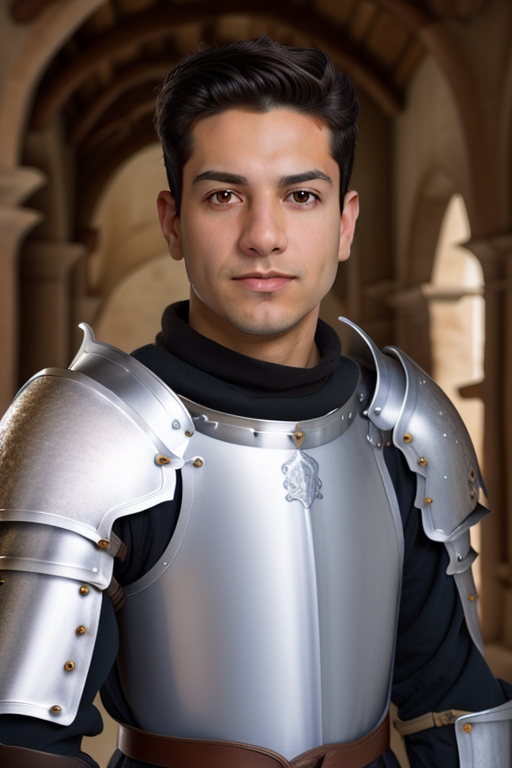

මුහුණ නිර්මාණය කිරීමේ විශේෂාංගය භාවිතා කිරීමට මාර්ගෝපදේශය
AiCasso හි මුහුණ නිර්මාණය කිරීමේ විශේෂාංගය ඉතා විශාල වේ! ඔබට විවිධ චරිත හෝ ශෛලීන්ට විශේෂිත මුහුණක් ඇතුළත් කරමින් අලංකාර රූප නිර්මාණය කිරීමට ඉඩ සලසයි. ඔබ කුමක් හෝ චරිතයක්, සම්පූර්ණයක් හෝ සමාurai එකක් සිතනවාද, AiCasso ඔබගේ ඇතුළත් කළ මුහුණ භාවිතා කරමින් ඉල්ලූ නිර්මාණයට ඒ මුහුණ එකතු කරමින් රූපයක් නිර්මාණය කරයි.
මෙය කෙසේ ක්රියා කරයි:
ඇතුළත් රූපය:
ඉල්ලීම 1:
"සත්යය කුමාරයෙකු, උපරිම මානය භාවිතා කරන්න"
ප්රතිඵල 1:

ඉල්ලීම 2:
"චිබි ශෛලිය භාවිතා කරන්න සහ සමාurai එකක් සාදන්න, පූර්ව නිර්දේශිත අගයන් භාවිතා කරන්න"
ප්රතිඵල 2:
ඉල්ලීම 3:
"සමාurai එකක්, 31 දෙනොයිසිං පියවර භාවිතා කරන්න, සහ ඇනිමේ ශෛලිය"
ප්රතිඵල 3:
විකල්ප පරාමිතීන්
ඔබගේ නිර්මාණය කළ රූප වලට තවත් පුද්ගලිකත්වයක් හෝ පාලනයක් එක් කිරීමට අවශ්ය නම්, ඔබට සකස් කළ හැකි කිහිපයක් මෙහි ඇත:
- නැති ඉල්ලීම: මෙය AiCasso ට ඔබට රූපයේ දැකීමට නැත යන්න කියන්න පුළුවන්. ඔබ මෙය හිස් තබනවානම්, AiCasso පозитිව් ඉල්ලීම මත පමණක් අවධානය යොමු කරනු ඇත.
- දෙනොයිසිං පියවර ගණන: මෙය රූපය කෙසේ හොඳින් සහ නිවැරදි ලෙස පෙනෙන බව පාලනය කරයි. ඔබට 21, 31, හෝ 41 පියවර අතර තෝරා ගත හැක, 41 යනු පූර්ව නිර්දේශිතය. වැඩි පියවර ගණනක් යනු වඩා නිවැරදි, වඩා නිවැරදි රූපයක් වේ.
- මාර්ගෝපදේශන මානය: මෙය රූපය ඔබගේ විස්තරයට සත්යය තබා ගැනීමට උපකාරී වේ. මානය 1 සිට 20 දක්වා වේ, 10 යනු පූර්ව නිර්දේශිතය. ඉහළ අංක යනු AiCasso ඔබගේ ඉල්ලීමට ආසන්නව රැඳී සිටී.
- S මානය: මෙය මුහුණේ ව්යුහය පිළිබඳ වේ. මෙය තාක්ෂණික වශයෙන් කුඩා වේ, නමුත් මූලික වශයෙන් මුහුණේ ව්යුහයේ බර සකස් කරයි. පූර්ව නිර්දේශිතය 1.0 වන අතර, ඔබට 0.0 සිට 2.0 දක්වා යන්න පුළුවන්.
- ශෛලිය: ඔබගේ රූපයට විශේෂිත වාසියක් ලබා දීමට අවශ්යද? ඔබට කාමික, චිබි, 3D, ඇනිමේ, හෝ සත්යශීලී වැනි ශෛලාවක් තෝරා ගත හැක. සත්යශීලී යනු පූර්ව නිර්දේශිතය, නමුත් නිර්මාණශීලී වීමට නිදහස් වන්න!
සමහර විට, AiCasso ඉතා කණගාටුයි. ඔබට වාක්ය විශේෂඥයෙකු විය යුතු නැත හෝ සෑම විස්තරයක්ම නිවැරදි විය යුතු නැත. ඔබට අවශ්ය දේ ඔබේම වචන වලින් විස්තර කරන්න, AiCasso ඉතිරි කටයුතු කරනු ඇත. නිර්මාණය කිරීමට අනුභව කරන්න!